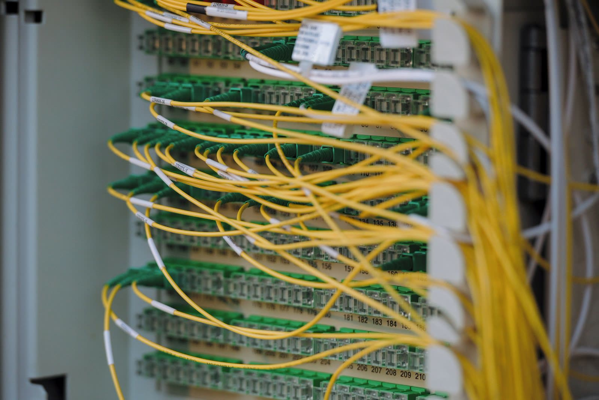

Free port discovery sounds simple, but it becomes difficult when rack documentation, switch usage, and physical cabling no longer tell the same story. Good capacity planning starts by resolving that gap. This article explains why visually verified port availability helps infrastructure teams plan growth, reduce wasted time, and avoid avoidable deployment delays.
- Available switch capacity is often overstated or understated in static records.
- Physical port visibility helps teams plan adds, moves, and expansions faster.
- Capacity conversations improve when port availability is verified, not guessed.
Port availability is rarely as clear as it looks in the spreadsheet.
Many teams assume they know how much switch capacity is available because a diagram, spreadsheet, or DCIM record says a set of ports is still open. In reality, field changes, patch updates, temporary links, and incomplete documentation can make those records unreliable. A port that looks available in the system may already be in use, while a port that appears occupied may no longer serve a production workload.

Capacity planning depends on the physical truth of the rack.
Free port discovery affects more than cable work. It impacts deployment speed, expansion planning, migration readiness, and refresh timelines. When teams cannot confidently identify spare switch capacity, every new project starts with extra validation effort. That slows down implementation and creates avoidable uncertainty during change windows.
A port that looks available in the system may already be in use, while a port that appears occupied may no longer serve a production workload.
They verify physical port state before they promise capacity.
The most effective infrastructure teams compare logical switch data with visible rack conditions. They confirm which ports are patched, which are unused, and whether cabling matches the expected topology before committing new capacity to a project. This approach reduces surprises and turns port planning into a faster, more defensible workflow.
Accurate port visibility saves time across every rack change.
When port availability is clear, engineers spend less time tracing cables, second-guessing diagrams, or reopening change plans. New installs move faster because the team starts from a verified view of the rack instead of a debated one. That creates smoother provisioning, cleaner rack layouts, and more reliable infrastructure planning over time.